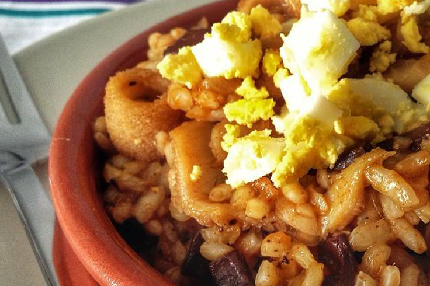
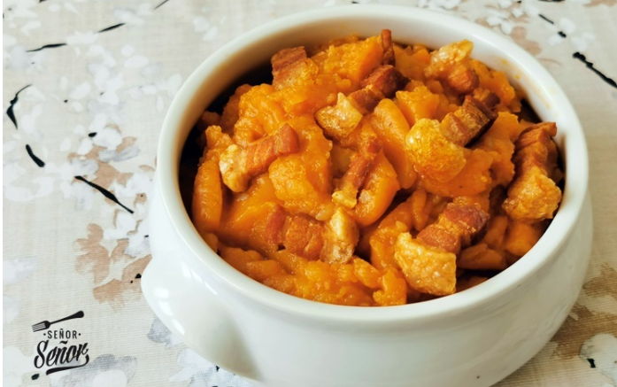
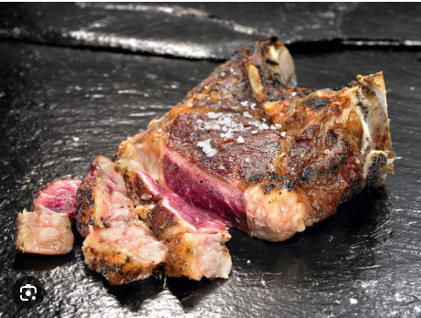
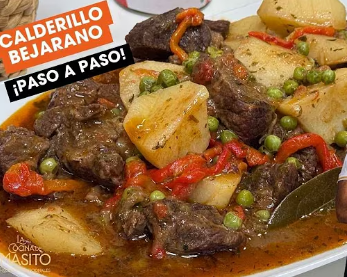
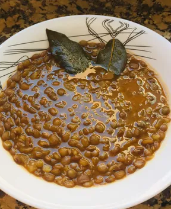
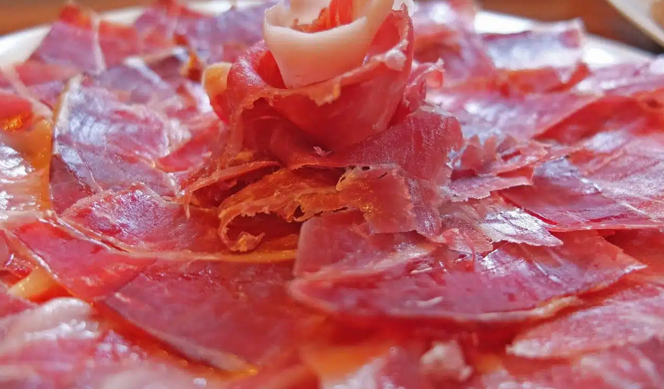
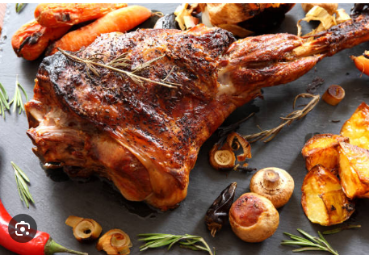
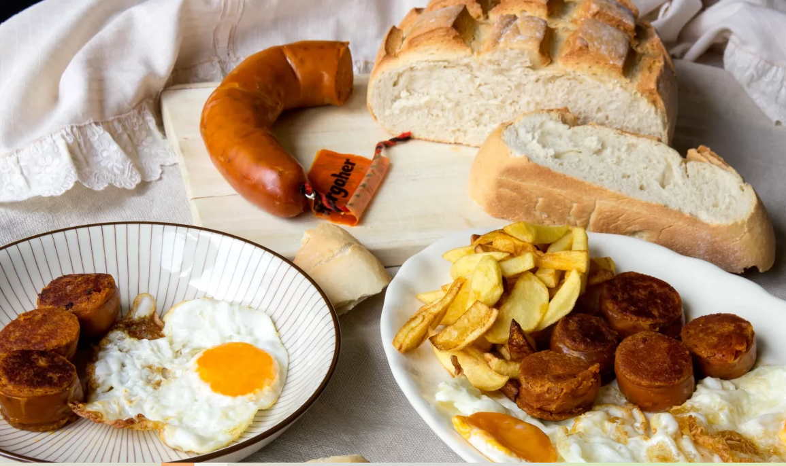
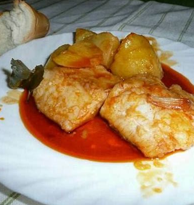
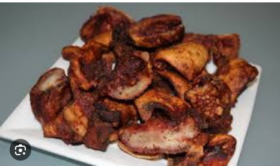

Platos típicos de Salamanca
Chanfaina
Es un guiso tradicional y contundente basado en la casquería de cordero (asadura, callos, manitas) y arroz, sazonado con pimentón, ajo, comino y laurel. Es un plato de aprovechamiento, servido a menudo con huevo duro picado, típico de la cocina salmantina que se cocina lentamente

Patatas Meneas o Revolconas
Las patatas revolconas o meneás son un plato de puré de patatas típico de Salamanca, Cáceres. Se trata de un plato de la cocina española elaborado con patatas y pimentón, al que se añaden productos cárnicos de la matanza.

Ternera de Salamanca
Plato típico es la ternera de Salamanca

En la provincia de Salamanca, es típico el Calderillo Bejarano: El Guiso de la Sierra
El calderillo bejarano es un guiso de ternera típico de Béjar, una localidad serrana de Salamanca. Este plato se prepara con carne de ternera, pimientos, tomate, cebolla, ajo y vino blanco, y se cocina lentamente para que la carne quede tierna y llena de sabor. Es ideal para los días fríos, cuando un plato caliente y sustancioso se convierte en un auténtico consuelo.

Lentejas de la Armuña
Las lentejas de la Armuña (IGP Salamanca) son una variedad autóctona de alta calidad, caracterizadas por su tamaño grande, piel fina y textura cremosa, ideales para el tradicional guiso salmantino. El plato típico se prepara a fuego lento con chorizo, morcilla, panceta, cebolla, pimentón y laurel, resultando en un potaje meloso y rico en hierro

Jamón Ibérico de Salamanca
El Jamón Ibérico se caracteriza por su sabor equilibrado rico en matices y aromas, fruto de un período de curación superior a 24 meses y a una alimentación de gran calidad. Su color va del rosa intenso al rosa claro con abundante grasa veteada al corte. Es muy suave en boca a la vez que ligero.

Lechazo Asado
El Lechazo Asado de forma tradicional es el plato más relevante de la gastronomía de Salamanca. un plato que sin duda deleitará a los paladares más exigentes y sorprenderá a los más curiosos.

Huevos frito con farinato
Huevos fritos con puntilla Rodajas de farinato bien doradas A veces se acompaña con patatas fritas o tostadas de pan
El contraste del huevo (con la yema líquida ) con el sabor especiado del farinato es lo que lo hace tan especial.

Bacalao a la tranca
- Lomos de bacalao desalado
- atatas cortadas en rodajas (cocidas o confitadas)
- Ajos laminados o picados
- Pimentón dulce o agridulce de buena calidad (normalmente de la Vera)
- Aceite de oliva virgen extra
- A veces se añade guindilla para un toque picante
La clave está en la tranca: una salsa caliente de aceite, ajo y pimentón que se vierte sobre el bacalao justo antes de servir.

Plato de jeta
La jeta (morro o careta de cerdo) es uno de los platos más emblemáticos de Salamanca, considerado incluso el plato estrella en muchos bares tradicionales de la ciudad. a jeta es el plato por excelencia de Salamancay procede de la parte de la careta del cerdo ibérico (frente-morro-pómulos-carrilleras)
